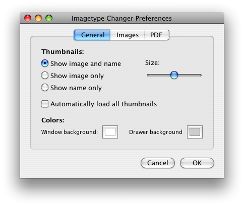
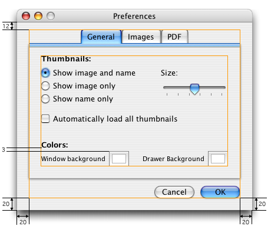

ComponentUI's implemented by the Quaqua Look and Feel (Quaqua) have a translucent margin with a size of 3 pixels. The purpose of the margin, is to visually even out the cast shadows and focus rings of the components.
On the picture below, all components have been implemented by Quaqua. All components align to each other, without requiring additional work by the designer of the layout.

If you are working with a bixel-based
layout manager, you have
to
subtract
the 3 pixel margin
from
the distance
between
the
components.
All
values
shown
in the
picture
below
must have the value 3 or 6 subtracted. 3 must be subtracted from the component
bounds to the frame bounds, 6 must be subtracted between two components.

To create distances smaller than 6 pixels between two components it is recommended to have these components overlap.
In case you can't do the overlapping, you can achieve
a similar result, by manually
overriding the margin for a single component. Here's a code snippet
which sets the visual margin at the bottom of the component to 0 and lets
all other margins use 3.
|
Overlapping the components is the preferred way for achieving a small spacing between components. In case the margin is generally too wide, and you can't have your components overlap, you can change the default value for the visual margin, as shown in the code snippet below.
|